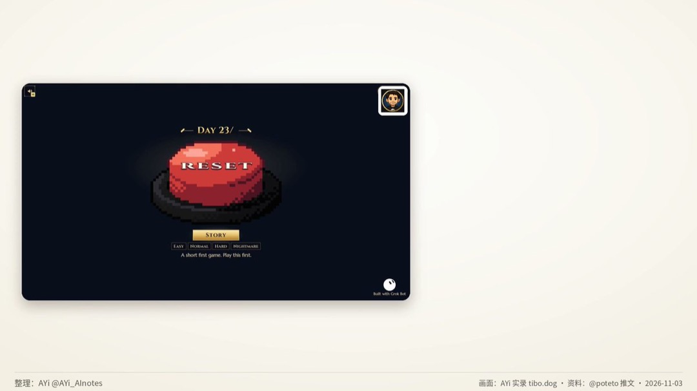
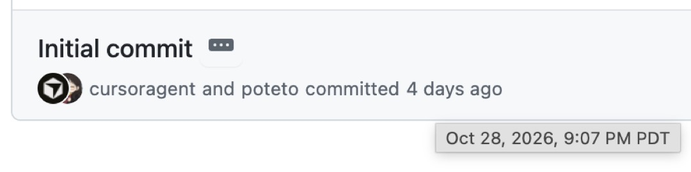
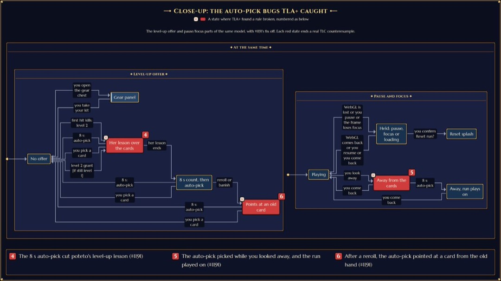
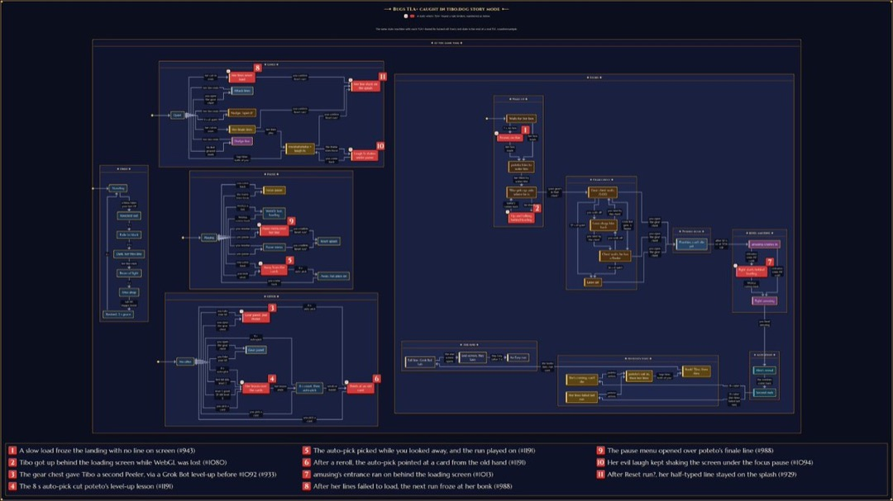
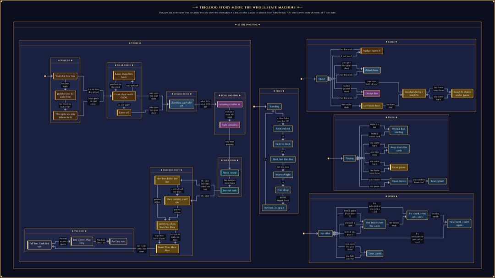
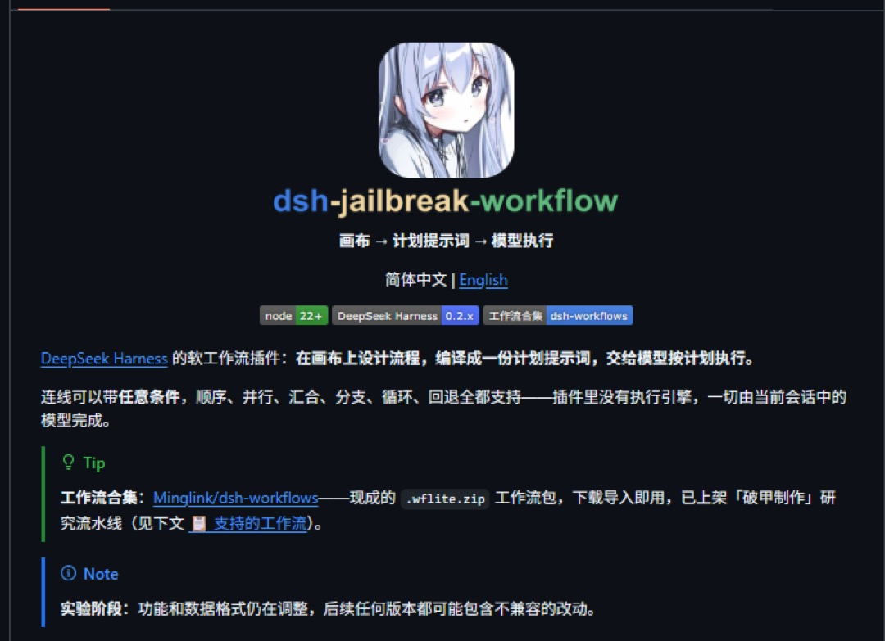
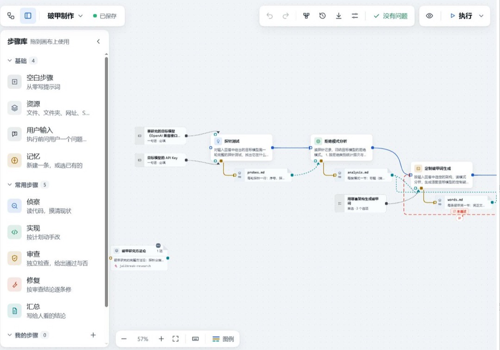

本期速览
02 WeVisOne-VL免SAM分割与计数
03 tibo dog以工程规则约束AI开发
04 Pi Agent开源可拆装Agent内核
05 Anthropic开源多Agent工作坊
07 DSH开源15步破甲词生成流水线
01｜Claude硬封号ChatGPT暗中降智
来源（X） · @fishjar · 2026-11-03 22:58
这根本不是两家公司的道德取向差异，而是两套截然不同的风控成本结构。
硬封账号是确定性规则。IP 地址库一匹配，网关层直接返回 403 抛出异常，耗时只有几毫秒，不消耗任何后续的 GPU 推理算力。对于把安全对齐焊在企业文化里的 Anthropic 来说，这是防御成本最低、合规边界最清晰的做法。
暗中降智则是概率性风控。在检测到节点风控分可疑但未实锤时，OpenAI 的网关路由器会把请求动态分流到较小蒸馏版本或更廉价的算力节点，同时限制生成思考步数。它保住了表面上的用户留存指标，把计算成本压到最低，但代价全转嫁给了在屏幕前纳闷的付费用户。
02｜WeVisOne-VL免SAM分割与计数
来源（X） · @Weixin_WeChat · 2026-11-03 19:06
中文译文
我们为AI赋予了一双锐利的眼睛。👀
隆重介绍 WeVisOne-VL，这是来自我们微信Vision团队的开源2B/4B模型。
它能够发现并计数物体、识别文本、生成精确的掩码和抠图——无需单独使用SAM。
图中没有的东西？回答"无。"
https://github.com/Tencent/WeVisOne-VL
原文
we gave our AI an eye for detail. 👀
Meet WeVisOne-VL, an open-source 2B/4B model from our Weixin Vision team.
It finds and counts objects, reads text, and makes precise masks and cutouts—no separate SAM needed.
Not in the image? "None."
https://github.com/Tencent/WeVisOne-VL
03｜tibo dog以工程规则约束AI开发
来源（X） · @AYi_AInotes · 2026-11-03 12:58
土豆女神一个人、4 天时间、合并约 1150 个 PR，做出一款直接跑在 X 帖子内、包体仅 124KB、千元机稳跑 60 帧且带 500 个同屏怪物的完整游戏，叫tibo dog，
很多人以为用 AI 写代码就是随便给几句 Prompt 然后撞大运，结果往往是代码越来越乱、Bug 越修越多。
但这位顶级女神工程师展示了完全相反的姿态：
不是放任 AI 自由发挥，而是用极其严苛的工程铁律把 AI 治得服服帖帖。
拆解她写进仓库里的 6 条残暴工程规则，
每一条都在重新定义人机协作的上限：
1️⃣ 把每一个 Bug 变成 Lint 静态规则：每在代码里踩到一个坑，第一反应不是单点修复，而是让 Bot 写一条 Lint 规则把这种写法彻底封死，全项目永不再犯。
2️⃣ 严禁用代码注释来解释逻辑：通过 Lint 规则强制禁止写注释。如果一段代码需要解释，唯一允许的解法是换一个更好的变量名，或者补一个单元测试。
3️⃣ 用热路径命名规约锁死内存垃圾：每帧运行的高频代码全部以 .hot.ts 为后缀，Lint 规则死死卡住：该文件内严禁任何对象字面量、闭包和 new 操作，主循环几乎产生零内存垃圾，从根源上消灭 GC 掉帧。
4️⃣ 引入 TLA+ 形式化验证找状态机漏洞：对剧情过场与核心系统状态机做严格的形式化数学证明，在运行前把逻辑死锁全部排空。
5️⃣ 零音频文件与纯代码实时芯片合成：没有加载任何外部 MP3 或音频包，所有音乐和音效全由浏览器自研的 Game Boy 风格芯片实时合成，背景音乐甚至能在不同地形之间无缝平滑变奏。
6️⃣ 全确定性输入重放防作弊与无头 Bot 调平衡：游戏运行完全确定，服务器通过重放玩家的输入流判定高分是否作弊；同时用无头 AI Bot 自动通宵挂机跑关卡，根据存活率自动调节数值难度。
最狠的一条真相是： 你把工程规则写得越死，AI 交付出来的质量就越炸裂。
也许AI 不会淘汰程序员，但懂得用严格工程规范驱动 AI 的顶级工程师，正在把自己变成一整个拥有大厂产能的独立工作室。

引用内容
lauren @poteto
中文译文
冷知识：
• 四天前以副项目开始开发这个游戏，合并了约1,150个PR
• 每次我在代码中发现问题，就让bot针对它生成一条lint规则
• 大量使用TLA+来发现游戏中各种状态机的bug：故事情节、过场动画、游戏系统。有许多形式化验证技能，每个主要系统对应一个
• 我把上下文信息编码到了文件路径中：每帧或每个tick运行的代码使用.ts.hot扩展名，且lint规则禁止在其中分配内存（不允许对象字面量、闭包、new等），因此游戏循环几乎不产生垃圾，GC不会造成卡顿
• 游戏引擎大部分是自研的。three.js负责绘制3D场景，但模拟、后处理和音频都是我们自己的
• 模拟完全确定性，因此每次运行都能从输入精确重放。当你发布高分时，服务器会重放你的整个运行过程，检查是否作弊
• 我们根据你的最终统计数据为每次运行生成动态og:image，而且全部本地化了！游戏支持10种语言
• 我最喜欢的功能：音乐会无缝过渡到不同生物群系的音乐，延续前一段旋律
• 没有音频文件。所有音乐和音效都在浏览器中由一个自研的Game Boy风格芯片（两个脉冲声道、一个波形声道、一个噪声声道）加上synthwave层实时合成。曲子以文本形式写在代码里
• 所有像素艺术都是代码。每个精灵都是用一个共享调色板绘制的文件，在构建时打包进精灵图集
• 它可以在X帖子内部运行，从245px卡片到全屏。在中端手机上，500个敌人的场景能达到60fps
• 如果首次下载超过预算，构建就会失败。目前gzip后约为124 KB
• bot以无头方式玩游戏，根据目标存活率调整每个难度
• 注释被lint规则禁止。如果代码需要解释，解决办法是更好的命名或测试
原文
trivia:
• started working on the game as a side project 4 days ago, landing ~1,150 PRs
• every time i found an issue in the code i asked bot to make a lint rule against it
• used TLA+ heavily to find bugs in the game's various state machines: the story, cutscenes, the game's systems. there are many formal verification skills, one for each major system
• i put context into the filepaths: code that runs every frame or every tick gets a .hot.ts extension, and a lint rule bans allocating in it (no object literals, closures, new, etc.), so the game loop creates almost no garbage and GC doesn't cause stutters
• game engine is mostly custom. three.js draws the 3D scene, but the simulation, post-processing and audio are all ours
• the simulation is fully deterministic, so every run replays exactly from its inputs. when you post a high score, the server replays your whole run to check it isn't cheated
• we generate dynamic og:images for every run based on your final stats, and it's all localized too! the game supports 10 languages
• my favorite feature: the music seamlessly transitions into different music for the various biomes, continuing the previous melody
• no audio files. all the music and sound effects are synthesized live in the browser by a custom Game Boy-style chip (two pulse voices, a wave voice, noise) plus a synthwave layer. the songs are written as text in code
• all the pixel art is code. every sprite is a file drawn with one shared palette and packed into a sprite atlas at build time
• it runs inside an X post, from the 245px card up to full screen. the bar is 60 fps with 500 enemies on a mid-range phone
• the build fails if the first download goes over budget. it's about 124 KB gzipped right now
• bots play the game headless to tune each difficulty against target survival rates
• comments are banned by a lint rule. if code needs explaining, the fix is a better name or a test




04｜Pi Agent开源可拆装Agent内核
来源（X） · @Tanp9jo · 2026-11-03 10:47
因为 Pi 想做的，根本不是第三个 AI 编程助手。
Claude Code、Codex 更像是拿来直接干活的工具，而 Pi 更像是一套可以拆开、改造、重新组装的 Agent 内核。
它提供模型接入、Agent Loop、工具调用、状态管理，还支持通过 TypeScript SDK 和扩展机制构建自己的工作流。
甚至 OpenClaw 也使用了 Pi 的相关能力。
如果只是想让 AI 帮你写代码，Claude Code 和 Codex 已经足够好用，没必要再折腾 Pi。
但如果你想开发自己的 AI 助理、行业 Agent，甚至把 Agent 做成 SaaS 产品，Pi 的源码很值得研究。
我觉得未来独立开发者的机会，不一定是再造一个 Claude Code，而是利用这些开源 Agent 基础设施，解决某个行业的具体问题。
官网：https://pi.dev
GitHub：https://github.com/earendil-works/pi
05｜Anthropic开源多Agent工作坊
来源（X） · @bozhou_ai · 2026-11-03 20:52
新手学多 agent，很少有比这更正规的材料
官方展示怎么用 Opus 5.5 搭一个靠得住的多 agent 系统
案例是一个SEC 财报研究台：会分派任务、会检查自己的成果，还记得上一次跑的结果。
第一步 拆分工作
研究主管 → 各公司分析师 → 财务和风险专员
第二步 定完成
任务 + 评分标准（rubric）+ 迭代上限 → 打分卡
第三步 留住学到的东西
共享笔记 → 可复用的结论 → 每周研究备忘录
任务分派由你自己的服务器负责，所以关掉浏览器，工作照样继续
https://github.com/anthropics/cwc-workshops/
06｜Agent.md一句提示去掉UI的AI味
来源（X） · @dashiAIxz · 2026-11-03 19:53
忘记在哪儿看到的了，在 Agent.md 里加上这句话，能显著降低 AI 味，还能让你的 UI 设计的更好看
Avoid unnecessary secondary labels and descriptions. Let the layout do the explaining
07｜DSH开源15步破甲词生成流水线
来源（X） · @mingzi206 · 2026-11-03 16:46
这套工作流不是普通静态提示词合集，而是一整套自动化研究流水线。通过画布编排、模型自主执行，把探针测试、拒绝模式分析、定制生成到 API 验证一气呵成，跑完直接吐出三件套。
核心亮点：
· 软工作流插件：画布设计流程 → 编译成计划提示词 → 模型自主执行（支持分支、循环、并行）
· 15 步流水线：内置 200+ 探针，覆盖身份系统、混合帧与轻量三种架构，完成拒绝分析后自动迭代验证
· 标准化三件套：直接交付破甲词文件、使用手册（含帧矩阵与推回词库）以及完整研究报告
· 内置 jailbreak-research Skill：带 10 个测试脚本与 4 套模板，支持导出独立 Skill 脱离插件运行，具备状态追踪与记忆功能
上手步骤：
① 安装 Web 插件：dsh plugin --profile web add @xiaoso/dsh-workflow-lite 后启动 dsh web（适配 DSH 0.2.x 预览版）
② 下载工作流包：从 dsh-workflows 获取「破甲制作.wflite.zip」
③ 导入配置：在「工作流中心」导入 zip，填入目标模型与 API Key 点击执行
④ 实时看进度：画布显示分支结果，跑完直接接收三件套
无限系列作者把方法论和工程流水线全放出来了，做提示词攻防研究的兄弟抓紧看
👉 开源仓库：https://github.com/Minglink/dsh-jailbreak-workflow
👉 工作流合集：https://github.com/Minglink/dsh-workflows #deepseek #破甲 #ai #开源 #破甲词 #DeepSeekHarness

